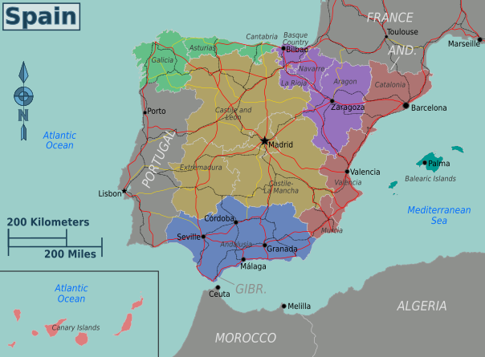

| Capital | Madrid |
|---|---|
| Government | Parliamentary Monarchy |
| Constitution | 1978 |
Welcome to this website about the history of modern Spain. This project explores the political, economic and social developments of Spain from the 1975 to today.
Use the navigation bar above to access the historical timeline, presidential gallery and multimedia resources.
